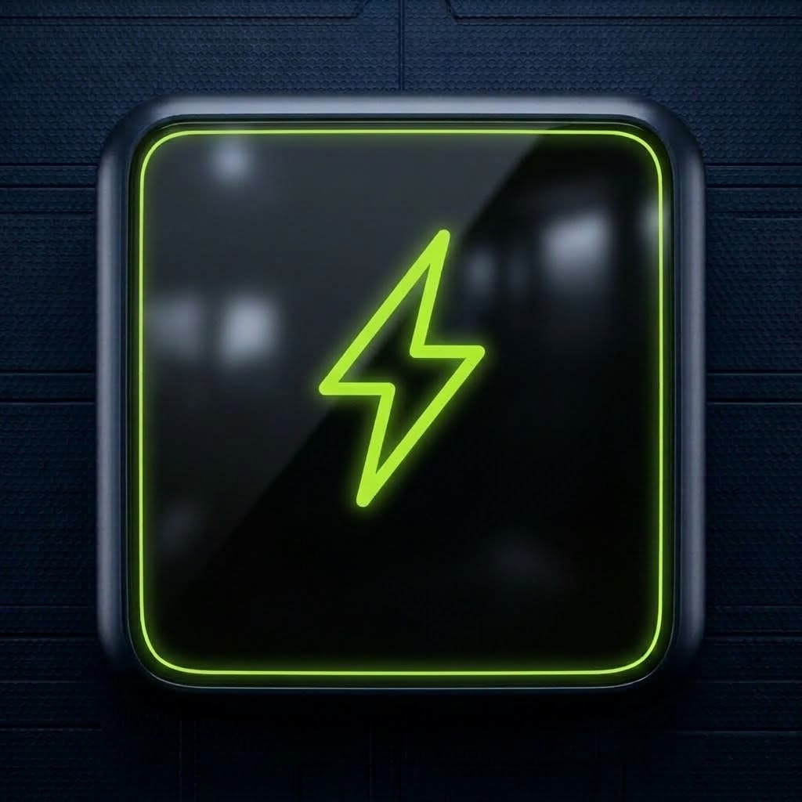

Optimiza tu entrenamiento con PulseFit
Una plataforma web avanzada e interactiva diseñada para deportistas y atletas. Monitorea métricas biométricas en tiempo real, calcula tu IMC, lleva el registro de tu diario de actividad y gestiona rutinas de entrenamiento y nutrición para alcanzar el máximo rendimiento físico.

PULSEFIT
High Performance & Fitness Center
¿Qué ofrece la plataforma PulseFit?
Diseñada para centralizar todos los aspectos del entrenamiento físico, nutrición saludable y seguimiento biométrico en una sola interfaz reactiva.
Perfil & Diagnóstico de IMC
Registro biométrico del atleta con edad, género, peso y estatura. Calcula instantáneamente el Índice de Masa Corporal (IMC) y el rango saludable adaptado a las metas individuales.
Diario & Registro de Actividad
Bitácora cronológica para asentar cada sesión deportiva completada, duración en minutos, intensidad del esfuerzo percibido y observaciones técnicas.
Rutinas Personalizadas
Planes estructurados por niveles y enfoques (fuerza, hipertrofia, resistencia, full-body) con detalle de ejercicios, series, repeticiones y descansos recomendados.
Nutrición & Macronutrientes
Orientación alimenticia según objetivos (déficit calórico, mantenimiento o superávit para ganancia de masa), distribución de proteínas, carbohidratos y grasas saludables.
Cronómetro de Descanso
Temporizador integrado para series de entrenamiento con tiempos preestablecidos (30s, 60s, 90s, 120s) y alarmas para mantener la intensidad sin perder concentración.
Monitoreo de Hidratación
Contador interactivo de vasos de agua diarios para asegurar un estado óptimo de hidratación celular durante y después del ejercicio de alta intensidad.
Tecnologías & Herramientas
Construido con estándares modernos de ingeniería de software frontend para lograr fluidez, velocidad y accesibilidad total.
Angular
Framework SPATypeScript
Tipado RobustoTailwind CSS
Estilos Utility-FirstBootstrap 5
Sistema RejillaVercel
Deploy & CI/CDGitHub
Control Versiones¿Listo para explorar PulseFit?
Accede directamente a la aplicación desplegada en la nube o consulta la implementación en el repositorio oficial de GitHub.
Nuestros Colaboradores
Integrantes del proyecto PulseFit · TEAM 6B